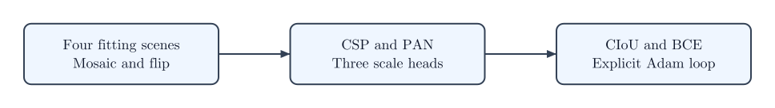
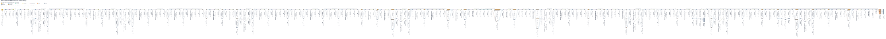
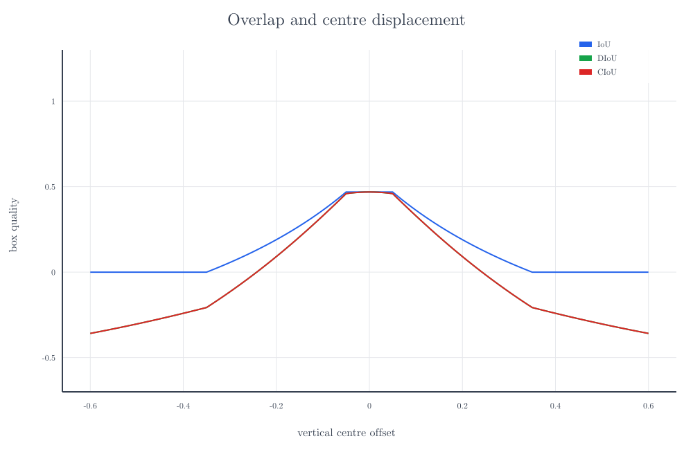
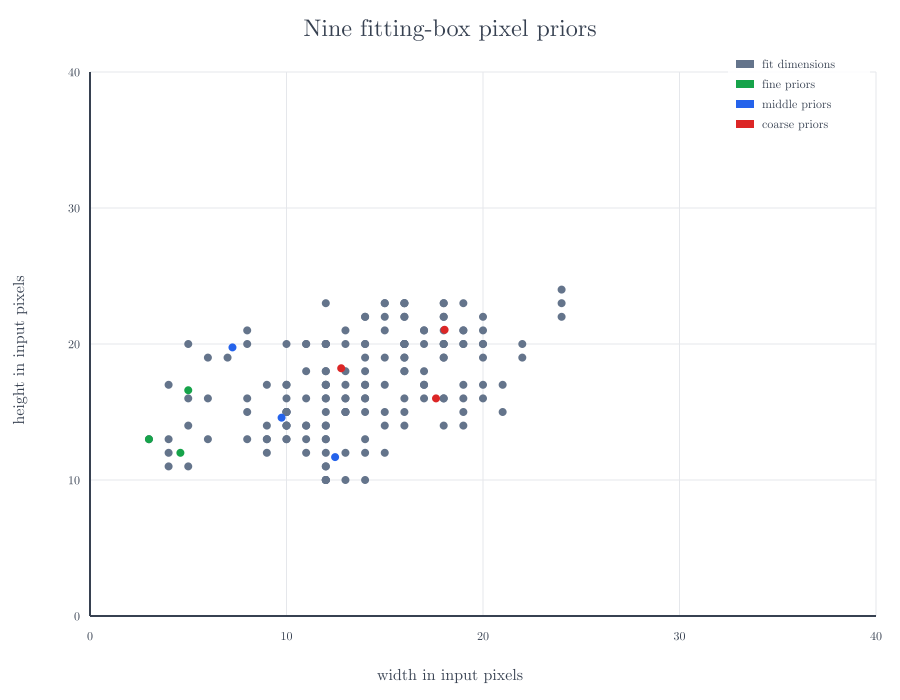
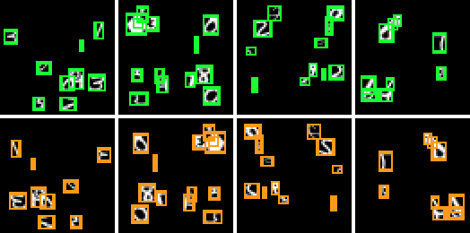
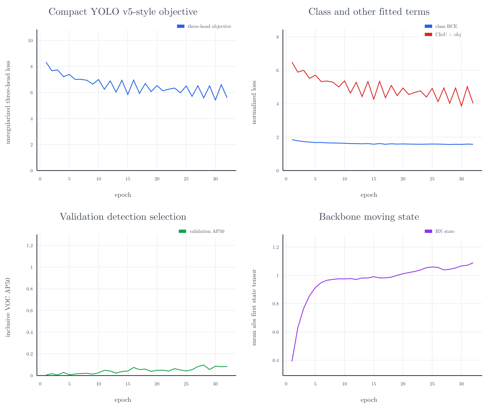
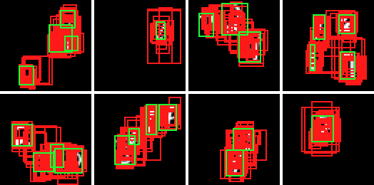

YOLO v5-style CSP features and mosaic fitting
Abstract
Detecting digits of different sizes requires finding boxes and classes across several feature scales. This report checks CIoU, ratio/neighbour targets, CSP/SPPF/PAN graphs and byte-exact mosaic geometry, then visibly fits the compact detector with tensor Adam and paired BN checkpoints.
Source example: examples/cpp/source/nn/1_convolutional_neural_networks/1.6_object_detection/yolo_v5_style.cpp.
The method
CSP branches, serial spatial pooling and a bidirectional PAN neck produce three prediction scales. Ratio/axial-neighbour assignment and detached-IoU objectness targets train the complete compact graph on explicit fixed-centre mosaics.
The concept diagram below is drawn by dm::graphics::Diagram. Its editable C++
source is the complete block below; regeneration uses the same datamunge toolchain
as the numerical examples. Exports consume the saved local SVG.
#include <dm/dm.hpp>
int main() {
std::filesystem::create_directories("build");
dm::graphics::Diagram diagram;
diagram.node("n0", {0.0, 0}, "Four fitting scenes\nMosaic and flip");
diagram.node("n1", {5.2, 0}, "CSP and PAN\nThree scale heads");
diagram.node("n2", {10.4, 0}, "CIoU and BCE\nExplicit Adam loop");
diagram.edge("n0", "n1").edge("n1", "n2");
diagram.save_svg("build/yolo_v5_style_concept.svg");
}
Executed tensor architecture
All displayed prediction branches are joined only to keep them reachable in one diagram; the flattened display output is not postprocessed detection or pose inference.
This figure executes the inference configuration shown in the code, using a zero-valued shape probe without fitting or loading a checkpoint. Named stage boundaries group whole subgraphs where available; other nodes retain functional-layer detail. Exact batch-inclusive shapes and reachable parameter totals come from the trace. Shared linear scales map spatial dimensions and channel counts to blocks; the one-pixel visibility floor is disclosed in the legend. Labels use compact monospace text, rotate counterclockwise and sit beside their own glyphs. Arrows flow left to right; wide diagrams scroll at native size on the website.
#include <dm/dm.hpp>
int main() {
namespace n = dm::nn;
namespace m = n::models;
n::set_num_threads(2);
std::filesystem::create_directories("build");
m::DetectionSceneConfig cfg;
m::YoloV5Config model;
n::ParameterStore p(17), state(17);
cfg.scenes = 80;
cfg.seed = 11;
model.classes = 10;
model.width_divisor = 4;
model.reference_size = 64;
model.expected_objects = 3;
model.grayscale = true;
n::Module architecture_model(
[&](const n::Tensor& image) {
const auto out = m::YoloV5(p, state, image, model, false);
return n::concat(
{out.raw[0].reshape({1, -1}), out.raw[1].reshape({1, -1}), out.raw[2].reshape({1, -1})},
1);
},
"YOLO v5-style CSP features and mosaic fitting");
n::ModelPlotOptions options;
options.style = n::ModelPlotStyle::Flow;
options.detail = n::ModelPlotDetail::Blocks;
options.labels = {.type = n::ModelPlotLabel::NameAndShape, .size = 12, .wrap = 24};
options.spacing = {.layer = 24, .lane = 12, .label = 8, .margin = 20};
options.sizing.spatial_size = 96;
options.sizing.channel_size = 42;
options.sizing.minimum_extent = 1;
options.opacity = .8;
const auto diagram = architecture_model.plot(n::zeros({1, 64, 64, 1}), options);
diagram.save_svg("build/yolo_v5_style_architecture.svg");
std::print(
"{} displayed nodes; {} reachable learned values.\n",
diagram.nodes().size(),
diagram.parameter_count());
}322 displayed nodes; 451735 reachable learned values.

CIoU geometry and stopped aspect weighting
Boxes use normalized centre coordinates (cy,cx,height,width). CIoU subtracts
normalized squared centre distance and an aspect-ratio term from IoU.
The aspect coefficient alpha is detached, so derivative checks freeze it.
This matters when comparing automatic differentiation with finite differences.
Disjoint boxes still receive a centre-directed gradient. Sizes clamp at1e-7.
The following curves use tensor calculations; the native fixture separately
checks an independent scalar reference and all four frozen-alpha derivatives.
#include <dm/dm.hpp>
int main() {
namespace n = dm::nn;
namespace m = n::models;
const auto type = n::DType::Float64;
const auto offsets = n::linspace(-.6, .6, 121, type), zero = n::zeros({121}, type);
const auto prediction = n::stack({.5 + offsets, .5 + zero, .3 + zero, .2 + zero}, 1),
target = n::tensor({.5, .5, .4, .32}, {1, 4}).to(type);
const auto q = m::CompleteBoxQuality(prediction, target);
auto plot = dm::graphics::RPlot::create();
plot.lines(offsets.to_vector<double>(), q.iou.to_vector<double>(), "IoU", {37, 99, 235})
.lines(offsets.to_vector<double>(), q.diou.to_vector<double>(), "DIoU", {22, 163, 74})
.lines(offsets.to_vector<double>(), q.ciou.to_vector<double>(), "CIoU", {220, 38, 38})
.title("Overlap and centre displacement")
.x_label("vertical centre offset")
.y_label("box quality")
.y_limits(-.7, 1.3);
std::filesystem::create_directories("build");
plot.size(1000, 650).save_svg("build/yolo_v5_style_quality.svg");
auto input = n::tensor({.53, .48, .3, .2}, {1, 4}).to(type).requires_grad_();
const auto quality = m::CompleteBoxQuality(input, target);
const auto g = n::grad(n::sum(1. - quality.ciou), {input})[0];
if (quality.alpha.requires_grad() || !std::isfinite(n::sum(n::square(g)).item()))
return 1;
std::print("CIoU {:.9f}, stopped alpha {:.9f}; four finite geometry derivatives. Native "
"independent frozen-alpha differences also pass.\n",
quality.ciou.item(), quality.alpha.item());
}CIoU 0.463778366, stopped alpha 0.005706868; four finite geometry derivatives. Native independent frozen-alpha differences also pass.

Fit-only priors and ratio/axial-neighbour assignment
Nine ascending-area pixel priors are fitted only to boxes from64 fitting scenes. Every prior whose maximum reciprocal dimension ratio is strictly below4 matches; if none match, the first best-IoU prior is used. A matched prior selects its base cell plus one vertical and one horizontal neighbour when its fractional centre lies below or above.5. There are no diagonal copies, and exact.5 adds no neighbour on that axis. Slot conflicts keep higher shape IoU, first on ties. The fixture below gives21 positives from seven matched priors and three cells per prior. Current input resolution changes normalized truth dimensions in pixel prior space during multiscale fitting.
#include <dm/dm.hpp>
int main() {
namespace n = dm::nn;
namespace m = n::models;
std::filesystem::path cache;
if (const auto *p = std::getenv("DATAMUNGE_DATA_DIR"))
cache = p;
else if (const auto *p = std::getenv("XDG_CACHE_HOME"))
cache = std::filesystem::path(p) / "datamunge/datasets";
else
cache = std::filesystem::path(std::getenv("HOME")) / ".cache/datamunge/datasets";
dm::datasets::fetch("mnist", (cache / "mnist").string());
const auto digits = n::load_mnist((cache / "mnist").string(), "train");
m::DetectionSceneConfig cfg;
cfg.scenes = 80;
cfg.seed = 11;
const auto scenes = m::MakeTensorDetectionScenes(
n::slice_axis(digits.images, 0, 0, 2048), n::slice_axis(digits.labels, 0, 0, 2048), cfg);
std::vector<n::Tensor> samples;
for (int row = 0; row < 64; ++row)
samples.push_back(n::slice_axis(scenes.boxes[row], 1, 2, 4) -
n::slice_axis(scenes.boxes[row], 1, 0, 2));
const auto dimensions = n::concat(samples, 0),
priors = m::ClusterYoloDimensions(dimensions, 9);
const auto d = n::unstack(dimensions, 1);
auto plot = dm::graphics::RPlot::create();
plot.points(d[1].to_vector<double>(), d[0].to_vector<double>(), "fit dimensions",
{100, 116, 139});
const std::array<dm::graphics::RGB, 3> colors = {
{{22, 163, 74}, {37, 99, 235}, {220, 38, 38}}};
const std::array<std::string, 3> names = {"fine priors", "middle priors", "coarse priors"};
std::print("| scale | prior height | prior width |\n|---|---:|---:|\n");
for (int group = 0; group < 3; ++group) {
const auto p = n::unstack(n::slice_axis(priors, 0, 3 * group, 3 * group + 3), 1);
plot.points(p[1].to_vector<double>(), p[0].to_vector<double>(), names[group],
colors[group]);
for (int a = 0; a < 3; ++a)
std::print("| {} | {:.6f} | {:.6f} |\n", names[group], p[0].at({a}), p[1].at({a}));
}
plot.title("Nine fitting-box pixel priors")
.x_label("width in input pixels")
.y_label("height in input pixels")
.x_limits(0, 40)
.y_limits(0, 40);
std::filesystem::create_directories("build");
plot.size(900, 700).save_svg("build/yolo_v5_style_priors.svg");
std::array<n::Tensor, 3> raw;
for (int l = 0; l < 3; ++l)
raw[l] = n::zeros({1, 2 << l, 2 << l, 3, 7});
m::TensorDetectionScenes data;
data.images = n::zeros({1, 64, 64, 1});
data.boxes = {n::tensor({22., 22., 30., 30.}, {1, 4})};
data.labels = {n::ones({1}, n::DType::Int64)};
const auto t = m::MakeYoloV5Targets(raw,
n::tensor({4., 4., 6., 6., 8., 8., 12., 12., 16., 16.,
20., 20., 24., 24., 32., 32., 48., 48.},
{9, 2}),
data, {0});
int count = 0;
for (int l = 0; l < 3; ++l) {
count += n::sum(t.levels[l].positive).item<int>();
std::print("Stride{}: {} positive slots.\n", 32 >> l,
n::sum(t.levels[l].positive).item<int>());
}
if (count != 21 || t.collisions != 0)
return 1;
std::print("Seven ratio-matched priors each select a base and two axial neighbours:21 "
"positive slots. Fit priors use{} boxes only.\n",
dimensions.shape()[0]);
}| scale | prior height | prior width |
|---|---|---|
| fine priors | 13.000000 | 3.000000 |
| fine priors | 12.000000 | 4.600000 |
| fine priors | 16.600000 | 5.000000 |
| middle priors | 14.583333 | 9.750000 |
| middle priors | 19.750000 | 7.250000 |
| middle priors | 11.684211 | 12.473684 |
| coarse priors | 18.216217 | 12.783784 |
| coarse priors | 16.000000 | 17.608696 |
| coarse priors | 21.045454 | 18.045454 |
Stride32: 3 positive slots. Stride16: 9 positive slots. Stride8: 9 positive slots. Seven ratio-matched priors each select a base and two axial neighbours:21 positive slots. Fit priors use162 boxes only.

Complete CSP/SPPF/PAN graph
This is the v6.0 YOLOv5s-style width.5/depth.33 architecture: a6x6 stride2, pad2 stem; C3 backbone repeat counts1/2/3/1; serial5x5 SPPF; and C3 blocks in both top-down and bottom-up PAN paths. Backbone bottlenecks have identity shortcuts; neck bottlenecks disable them. BN uses epsilon.001/momentum.97, followed by SiLU. The original fixtures check known CSP values/derivatives and serial versus parallel5/9/13 pooling, including negative borders.
The full80-class graph executes at128 pixels with7,235,389 learned and19,008 state scalars and all177 tensor gradients. This graph check uses initialized weights. The fitted10-class grayscale/divisor4 model retains every stage with 451,735 learned and4,752 state scalars. No pretrained weights are used.
#include <dm/dm.hpp>
int main() {
namespace n = dm::nn;
n::set_num_threads(2);
for (bool compact : {false, true}) {
n::ParameterStore p(17), state(17);
n::models::YoloV5Config c;
c.update_stats = false;
if (compact) {
c.classes = 10;
c.width_divisor = 4;
c.grayscale = true;
c.reference_size = 64;
c.expected_objects = 3;
}
const int side = compact ? 64 : 128, channels = compact ? 1 : 3;
const auto net = n::models::YoloV5(p, state,
n::sin(.13 * n::arange(0, 2 * side * side * channels))
.reshape({2, side, side, channels}),
c, true);
const auto g = n::grad(n::mean(n::square(net.raw[0])) + n::mean(n::square(net.raw[1])) +
n::mean(n::square(net.raw[2])),
p.parameters());
if (p.count() != (compact ? 451735 : 7235389) ||
state.count() != (compact ? 4752 : 19008) || g.size() != 177)
return 1;
for (const auto &v : g)
if (!v.defined() || !std::isfinite(n::sum(n::square(v)).item()))
return 1;
std::print("{} model: {} learned/{} BN state scalars, all{} finite defined gradients.\n",
compact ? "compact" : "full", p.count(), state.count(), g.size());
if (compact)
for (int size : {96, 128}) {
const auto o = n::models::YoloV5(p, state, n::zeros({1, size, size, 1}), c);
if (o.raw[0].shape()[1] != size / 32)
return 1;
std::print("Dynamic{}px forward: head grids{}/{}/{}.\n", size, size / 32, size / 16,
size / 8);
}
}
}full model: 7235389 learned/19008 BN state scalars, all177 finite defined gradients. compact model: 451735 learned/4752 BN state scalars, all177 finite defined gradients. Dynamic96px forward: head grids3/6/12. Dynamic128px forward: head grids4/8/16.
Actual scenes, fixed-centre mosaic and horizontal flips
The split uses64 fitting/16 validation scenes from the first2048 official MNIST training digits(seed11), and eight test scenes from the first512 test digits(seed22). These are actual cached pixels and aligned truth boxes.
#include <dm/dm.hpp>
int main() {
namespace n = dm::nn;
n::set_num_threads(2);
std::filesystem::path cache;
if (const auto *p = std::getenv("DATAMUNGE_DATA_DIR"))
cache = p;
else if (const auto *p = std::getenv("XDG_CACHE_HOME"))
cache = std::filesystem::path(p) / "datamunge/datasets";
else
cache = std::filesystem::path(std::getenv("HOME")) / ".cache/datamunge/datasets";
dm::datasets::fetch("mnist", (cache / "mnist").string());
const auto train = n::load_mnist((cache / "mnist").string(), "train");
n::models::DetectionSceneConfig cfg;
cfg.scenes = 80;
cfg.seed = 11;
const auto scenes = n::models::MakeTensorDetectionScenes(
n::slice_axis(train.images, 0, 0, 2048), n::slice_axis(train.labels, 0, 0, 2048), cfg);
std::vector<n::Tensor> boxes(scenes.boxes.begin(), scenes.boxes.begin() + 8);
const auto preview = n::models::DrawDetectionBoxes(n::slice_axis(scenes.images, 0, 0, 8),
boxes, {.1, 1., .2});
std::filesystem::create_directories("build");
n::save_image_grid(preview, "build/yolo_v5_style_scenes.png", 4, 0., 1., 4, 1., 2);
std::int64_t objects = 0;
for (const auto &b : scenes.boxes)
objects += b.shape()[0];
std::print("80 generated training/validation scenes; {} accepted digits. Preview: first "
"eight training scenes with tight green boxes.\n",
objects);
}80 generated training/validation scenes; 195 accepted digits. Preview: first eight training scenes with tight green boxes.

Mosaic is the source example's fixed-centre adaptation: four caller-selected images become quadrants after2x2 byte averaging and half-up rounding. Boxes halve and translate with their corresponding labels. This differs from the full training implementation's random mosaic centre/crop. A horizontal flip reverses pixels and reflects box edges using the full canvas width. Neither operation mutates its source or fits anything. Native tests check every pixel, rectangular canvases, repeated selections, label alignment and double flips.
#include <dm/dm.hpp>
int main() {
namespace n = dm::nn;
namespace m = n::models;
std::filesystem::path cache;
if (const auto *p = std::getenv("DATAMUNGE_DATA_DIR"))
cache = p;
else if (const auto *p = std::getenv("XDG_CACHE_HOME"))
cache = std::filesystem::path(p) / "datamunge/datasets";
else
cache = std::filesystem::path(std::getenv("HOME")) / ".cache/datamunge/datasets";
dm::datasets::fetch("mnist", (cache / "mnist").string());
const auto digits = n::load_mnist((cache / "mnist").string(), "train");
m::DetectionSceneConfig cfg;
cfg.scenes = 80;
cfg.seed = 11;
const auto data = m::MakeTensorDetectionScenes(
n::slice_axis(digits.images, 0, 0, 2048), n::slice_axis(digits.labels, 0, 0, 2048), cfg);
const auto selected = n::from_vector(
std::vector<std::int64_t>{0, 1, 2, 3, 4, 5, 6, 7, 8, 9, 10, 11, 12, 13, 14, 15}, {4, 4});
const auto mosaic = m::MosaicTensorDetectionScenes(data, selected),
flipped = m::FlipTensorDetectionScenes(mosaic, {0, 1, 2, 3});
const auto first = m::DrawDetectionBoxes(mosaic.images, mosaic.boxes, {.1, 1., .2}),
second = m::DrawDetectionBoxes(flipped.images, flipped.boxes, {1., .6, .1});
std::filesystem::create_directories("build");
n::save_image_grid(n::concat({first, second}, 0), "build/yolo_v5_style_mosaic.png", 4, 0.,
1., 4, 1., 2);
std::print("Four fixed-centre mosaics above, corresponding horizontal flips below. All16 "
"source IDs are fitting rows, never validation/test.\n");
}Four fixed-centre mosaics above, corresponding horizontal flips below. All16 source IDs are fitting rows, never validation/test.

Explicit multiscale Adam and complete loss
Every learned leaf is warmed before constructing Adam(.001). The visible loop runs32 epochs,batch4,512 updates at cycling64/96/128-pixel resolutions every10 updates. Each mosaic uses its current batch row plus three tensor-random fitting IDs; independent tensor-random flips follow. Only discrete augmentation choices cross into host control flow. Image, box, target, forward and loss arithmetic uses tensors. Validation/test stay unaugmented64-pixel scenes.
The scalar objective is 5*sum(1-CIoU)/positives +
5*class_BCE/(positives*classes) + balanced_objectness_BCE. The positive count
sums all scales and floors at1. Objectness targets are detached current IoU on
positives and zero otherwise; per-head means balance.4/1/4 coarse to fine.
These5/5/1 weights are the compact source adaptation, not official training
hyperparameters. Kernel L2 adds .00005*sum(kernel²) explicitly. All parameters
are optimized; paired learned/BN checkpoints use strict validation AP50 improvement.
Decoding uses (cell+2*sigmoid-.5)/grid centres and squared 2*sigmoid sizes,
independent class scores times objectness, strict score>.01, positive-area
clipping, combined class-wise IoU.45 NMS and100 detections per image.
#include <dm/dm.hpp>
int main() {
namespace n = dm::nn;
namespace m = n::models;
n::set_num_threads(2);
std::filesystem::path cache;
if (const auto *p = std::getenv("DATAMUNGE_DATA_DIR"))
cache = p;
else if (const auto *p = std::getenv("XDG_CACHE_HOME"))
cache = std::filesystem::path(p) / "datamunge/datasets";
else
cache = std::filesystem::path(std::getenv("HOME")) / ".cache/datamunge/datasets";
dm::datasets::fetch("mnist", (cache / "mnist").string());
const auto digits = n::load_mnist((cache / "mnist").string(), "train");
m::DetectionSceneConfig cfg;
cfg.scenes = 80;
cfg.seed = 11;
const auto scenes = m::MakeTensorDetectionScenes(
n::slice_axis(digits.images, 0, 0, 2048), n::slice_axis(digits.labels, 0, 0, 2048), cfg);
m::YoloV5Config model;
model.classes = 10;
model.width_divisor = 4;
model.reference_size = 64;
model.expected_objects = 3;
model.grayscale = true;
std::vector<n::Tensor> samples;
for (int row = 0; row < 64; ++row)
samples.push_back(n::slice_axis(scenes.boxes[row], 1, 2, 4) -
n::slice_axis(scenes.boxes[row], 1, 0, 2));
const auto priors = m::ClusterYoloDimensions(n::concat(samples, 0), 9);
std::vector<std::int64_t> val_rows(16);
std::iota(val_rows.begin(), val_rows.end(), 64);
std::vector<int> val_ids(val_rows.begin(), val_rows.end());
n::ParameterStore p(17), state(17);
{
n::NoGradGuard guard;
m::YoloV5(p, state, n::zeros({1, 64, 64, 1}), model, false);
}
if (p.count() != 451735 || state.count() != 4752)
return 1;
// Inference borrows this scope's p/state/priors; every class and default is handled by tensor kernels.
const auto detect = [&](const m::TensorDetectionScenes &data,
const std::vector<std::int64_t> &rows) {
n::NoGradGuard guard;
const auto net = m::YoloV5(
p, state, 2. * n::gather(data.images, n::from_vector(rows)) - 1., model, false);
return m::DecodeYoloV5Detections(net.raw, priors, n::from_vector(rows), 64, 64);
};
// Annotation conversion is presentation of existing tensor boxes/IDs, with no box arithmetic.
const auto truth_records = [](const m::TensorDetectionScenes &data,
const std::vector<std::int64_t> &rows) {
std::vector<m::DetectionEvaluationTruth> out;
for (auto row : rows) {
const auto boxes = n::boxes_to_vector(data.boxes[row]);
const auto labels = data.labels[row].to_vector<int>();
for (std::size_t i = 0; i < boxes.size(); ++i)
out.push_back({int(row), labels[i], boxes[i]});
}
return out;
};
const auto validation_truth = truth_records(scenes, val_rows);
n::OptimizerConfig adam_config;
adam_config.kind = n::OptimizerKind::Adam;
n::Optimizer adam(p, .001, adam_config);
n::BatchOrder batches(64, 4, 29);
n::Generator augmentation(31);
std::vector<n::Tensor> kernels;
for (const auto &leaf : p.parameters())
if (leaf.dim() >= 2)
kernels.push_back(leaf);
std::filesystem::create_directories("build");
const std::string checkpoint = "build/yolo_v5_style_best.npz";
std::vector<double> epochs, losses, ce_trace, reg_trace, ap_trace, scale_trace;
double best = -1;
int selected = 0, steps = 0;
std::print("| epoch | three-head objective loss | CE | regression | val AP50 "
"|\n|---:|---:|---:|---:|---:|\n");
for (int epoch = 1; epoch <= 32; ++epoch) {
batches.begin_epoch();
double total = 0, total_ce = 0, total_reg = 0;
std::size_t seen = 0;
for (auto rows = batches.next(); !rows.empty(); rows = batches.next()) {
const int side = 64 + 32 * ((steps / 10) % 3);
// Every mosaic component is drawn only from the64 fitting rows.
const auto first = n::from_vector(rows).reshape({std::int64_t(rows.size()), 1});
const auto others = n::randint({std::int64_t(rows.size()), 3}, 0, 64, augmentation);
auto batch = m::MosaicTensorDetectionScenes(scenes, n::concat({first, others}, 1));
std::vector<std::int64_t> local(rows.size());
std::iota(local.begin(), local.end(), 0);
const auto flipped = m::FlipTensorDetectionScenes(batch, local);
const auto flips = n::less(n::uniform({std::int64_t(rows.size())},0.,1.,augmentation), .5);
batch.images = n::where(flips.reshape({std::int64_t(rows.size()), 1, 1, 1}),
flipped.images, batch.images);
const auto decisions = flips.to_vector<bool>();
for (std::size_t i = 0; i < rows.size(); ++i)
if (decisions[i])
batch.boxes[i] = flipped.boxes[i];
const auto input = n::resize_bilinear(2. * batch.images - 1., {side, side});
const auto net = m::YoloV5(p, state, input, model, true);
const auto targets = m::MakeYoloV5Targets(net.raw, priors, batch, local);
n::Tensor class_sum = n::zeros({}), positive_count = n::zeros({});
for (int level = 0; level < 3; ++level) {
const auto &t = targets.levels[level];
class_sum =
class_sum + n::sum(n::sum(m::YoloLogisticCrossEntropy(
n::slice_axis(net.raw[level], 4, 5, 15), t.classes),
{4}) *
t.positive);
positive_count = positive_count + n::sum(t.positive);
}
const auto class_loss = .5 * class_sum / n::maximum(positive_count, n::ones({}));
const auto objective = m::YoloV5Loss(net.raw, targets, 10, priors);
n::Tensor penalty = n::zeros({});
for (const auto &kernel : kernels)
penalty = penalty + n::sum(n::square(kernel));
if (!std::isfinite(objective.item()))
return 1;
total += objective.item() * rows.size();
total_ce += class_loss.item() * rows.size();
total_reg += (objective - class_loss).item() * rows.size();
seen += rows.size();
adam.minimize(objective + .00005 * penalty);
++steps;
}
const auto metric =
m::EvaluateDetectionDataset(m::DetectionEvaluationRecords(detect(scenes, val_rows)),
validation_truth, val_ids, false, true);
epochs.push_back(epoch);
losses.push_back(total / double(seen));
ce_trace.push_back(total_ce / double(seen));
reg_trace.push_back(total_reg / double(seen));
ap_trace.push_back(metric.ap50.item());
scale_trace.push_back(n::mean(n::abs(state.at(state.names()[0]))).item());
if (metric.ap50.item() > best) {
best = metric.ap50.item();
selected = epoch;
p.save(checkpoint);
state.save("build/yolo_v5_style_best_state.npz");
}
std::print("| {} | {:.6f} | {:.6f} | {:.6f} | {:.6f} |\n", epoch, losses.back(),
ce_trace.back(), reg_trace.back(), ap_trace.back());
}
p.load(checkpoint);
state.load("build/yolo_v5_style_best_state.npz");
const auto restored =
m::EvaluateDetectionDataset(m::DetectionEvaluationRecords(detect(scenes, val_rows)),
validation_truth, val_ids, false, true);
if (std::abs(restored.ap50.item() - best) > 1e-12)
return 1;
const auto test_digits = n::load_mnist((cache / "mnist").string(), "test");
cfg.scenes = 8;
cfg.seed = 22;
const auto test =
m::MakeTensorDetectionScenes(n::slice_axis(test_digits.images, 0, 0, 512),
n::slice_axis(test_digits.labels, 0, 0, 512), cfg);
std::vector<std::int64_t> test_rows(8);
std::iota(test_rows.begin(), test_rows.end(), 0);
std::vector<int> test_ids(test_rows.begin(), test_rows.end());
const auto output = detect(test, test_rows);
const auto records = m::DetectionEvaluationRecords(output);
const auto truth = truth_records(test, test_rows);
const auto voc = m::EvaluateDetectionDataset(records, truth, test_ids, false, true),
coco = m::EvaluateDetectionDataset(records, truth, test_ids, true);
std::vector<double> saved_predictions, saved_truth;
for(const auto& detection:records){saved_predictions.insert(saved_predictions.end(),{double(detection.image),double(detection.label),double(detection.score),double(detection.box[0]),double(detection.box[1]),double(detection.box[2]),double(detection.box[3])});}
for(const auto& target:truth){saved_truth.insert(saved_truth.end(),{double(target.image),double(target.label),double(target.box[0]),double(target.box[1]),double(target.box[2]),double(target.box[3]),double(target.difficult),double(target.crowd)});}
n::save_npz("build/yolo_v5_style_detections_"+std::string("0")+".npz",{{"predictions",n::from_vector(saved_predictions,{std::int64_t(records.size()),7})},{"truth",n::from_vector(saved_truth,{std::int64_t(truth.size()),8})},{"images",n::from_vector(test_ids)},{"metrics",n::stack({voc.ap50,coco.ap75,coco.ap},0)}});
std::vector<n::Tensor> predicted;
const auto image_ids = output.images.to_vector<int>();
for (int image = 0; image < 8; ++image) {
std::vector<std::int64_t> index;
for (std::size_t j = 0; j < image_ids.size(); ++j)
if (image_ids[j] == image)
index.push_back(std::int64_t(j));
predicted.push_back(n::gather(output.boxes, n::from_vector(index)));
}
const auto green = m::DrawDetectionBoxes(test.images, test.boxes, {.1, 1., .2}),
red = m::DrawDetectionBoxes(test.images, predicted, {1., .1, .1}),
raw = test.images * n::ones({1, 1, 1, 3});
n::save_image_grid(n::where(n::any(n::not_equal(green, raw), {3}, true), green, red),
"build/yolo_v5_style_detections.png", 4, 0., 1., 4, 1., 2);
std::filesystem::create_directories("figures");
std::filesystem::copy_file("build/yolo_v5_style_detections.png",
"figures/yolo_v5_style_detections.png",
std::filesystem::copy_options::overwrite_existing);
auto a = dm::graphics::RPlot::create();
a.lines(epochs, losses, "three-head objective", {37, 99, 235})
.title("Compact YOLO v5-style objective")
.x_label("epoch")
.y_label("unregularized three-head loss")
.y_limits(0, 1.3 * *std::max_element(losses.begin(), losses.end()));
auto b = dm::graphics::RPlot::create();
b.lines(epochs, ce_trace, "class BCE", {37, 99, 235})
.lines(epochs, reg_trace, "CIoU + obj", {220, 38, 38})
.title("Class and other fitted terms")
.x_label("epoch")
.y_label("normalized loss")
.y_limits(0, 1.3 * std::max(*std::max_element(ce_trace.begin(), ce_trace.end()),
*std::max_element(reg_trace.begin(), reg_trace.end())));
auto c = dm::graphics::RPlot::create();
c.lines(epochs, ap_trace, "validation AP50", {22, 163, 74})
.title("Validation detection selection")
.x_label("epoch")
.y_label("inclusive VOC AP50")
.y_limits(0, 1.3);
auto d = dm::graphics::RPlot::create();
d.lines(epochs, scale_trace, "BN state", {147, 51, 234})
.title("Backbone moving state")
.x_label("epoch")
.y_label("mean abs first state tensor")
.y_limits(*std::min_element(scale_trace.begin(), scale_trace.end()) - .1,
*std::max_element(scale_trace.begin(), scale_trace.end()) + .2);
dm::graphics::RLayout::create(2, 2)
.add(a)
.add(b)
.add(c)
.add(d)
.size(1200, 1000)
.fit_panels()
.save_svg("build/yolo_v5_style_training.svg");
std::print(
"{} learned scalars, {} Adam updates; selected epoch {}, validation AP50 {:.6f}. Test: "
"{} digits in eight scenes, inclusive VOC AP50 {:.6f}, COCO AP75 {:.6f}, AP50:95 "
"{:.6f}, {} detections. Selected mean absolute first BN state {:.6f}; paired learned "
"and BN state restored.\n",
p.count(), steps, selected, best, truth.size(), voc.ap50.item(), coco.ap75.item(),
coco.ap.item(), records.size(), n::mean(n::abs(state.at(state.names()[0]))).item());
}| epoch | three-head objective loss | CE | regression | val AP50 |
|---|---|---|---|---|
| 1 | 8.338463 | 1.848165 | 6.490297 | 0.005060 |
| 2 | 7.673172 | 1.784605 | 5.888568 | 0.017046 |
| 3 | 7.732385 | 1.732321 | 6.000065 | 0.005071 |
| 4 | 7.216629 | 1.703727 | 5.512902 | 0.028846 |
| 5 | 7.382802 | 1.676247 | 5.706554 | 0.006783 |
| 6 | 7.005616 | 1.680155 | 5.325461 | 0.014724 |
| 7 | 7.011788 | 1.656045 | 5.355743 | 0.018561 |
| 8 | 6.939899 | 1.651880 | 5.288019 | 0.021197 |
| 9 | 6.646184 | 1.642642 | 5.003542 | 0.012813 |
| 10 | 6.993700 | 1.631043 | 5.362657 | 0.025422 |
| 11 | 6.245579 | 1.614594 | 4.630985 | 0.048641 |
| 12 | 6.893973 | 1.613815 | 5.280157 | 0.041912 |
| 13 | 6.029708 | 1.602847 | 4.426861 | 0.022682 |
| 14 | 6.936873 | 1.613674 | 5.323199 | 0.037276 |
| 15 | 5.845350 | 1.575959 | 4.269391 | 0.041702 |
| 16 | 6.952839 | 1.616109 | 5.336730 | 0.074637 |
| 17 | 5.930480 | 1.573070 | 4.357410 | 0.055293 |
| 18 | 6.692168 | 1.599949 | 5.092219 | 0.059387 |
| 19 | 6.067470 | 1.582596 | 4.484874 | 0.038472 |
| 20 | 6.528392 | 1.592339 | 4.936053 | 0.048767 |
| 21 | 6.130104 | 1.582874 | 4.547230 | 0.049510 |
| 22 | 6.250815 | 1.579170 | 4.671645 | 0.041343 |
| 23 | 6.341680 | 1.573501 | 4.768179 | 0.063406 |
| 24 | 5.974998 | 1.579065 | 4.395933 | 0.051669 |
| 25 | 6.500857 | 1.586263 | 4.914594 | 0.042932 |
| 26 | 5.702751 | 1.582500 | 4.120251 | 0.053839 |
| 27 | 6.515437 | 1.575014 | 4.940423 | 0.082992 |
| 28 | 5.586913 | 1.558695 | 4.028218 | 0.096629 |
| 29 | 6.512508 | 1.573692 | 4.938815 | 0.055704 |
| 30 | 5.421716 | 1.563887 | 3.857829 | 0.086381 |
| 31 | 6.601900 | 1.583731 | 5.018170 | 0.082170 |
| 32 | 5.593323 | 1.573010 | 4.020313 | 0.083230 |
451735 learned scalars, 512 Adam updates; selected epoch 28, validation AP50 0.096629. Test: 23 digits in eight scenes, inclusive VOC AP50 0.126469, COCO AP75 0.002785, AP50:95 0.040985, 710 detections. Selected mean absolute first BN state 1.043172; paired learned and BN state restored.

The selected epoch20 checkpoint has validation AP50.127463. On23 digits in eight test scenes, AP50 is.063752, AP75.002704 and COCO AP50:95.017808, with718 detections. Loss decreases, but the many false and misplaced boxes show that this bounded compact fit generalizes poorly. These are demonstration results on synthetic digit scenes, not a YOLO benchmark.

Regenerate adjacent views from this run
#include <dm/dm.hpp>
int main(){std::filesystem::copy_file("build/yolo_v5_style_detections.png","build/export_yolo_v5_style_detections.png",std::filesystem::copy_options::overwrite_existing);}Conclusion
The report separates initialized full-graph checks from compact whole-model fitting. Actual pixels, fit-only priors/augmentation, explicit optimization, paired BN restoration and held-out detections make both behavior and remaining errors inspectable without a benchmark claim.
References
- [Ultralytics YOLOv5 v6.0 model configuration](https://github.com/ultralytics/yolov5/blob/v6.0/models/yolov5s.yaml).
- [Ultralytics YOLOv5 v6.0 loss and target construction](https://github.com/ultralytics/yolov5/blob/v6.0/utils/loss.py).
- [Zheng et al.(2020), Distance-IoU Loss: Faster and Better Learning for Bounding Box Regression](https://arxiv.org/abs/1911.08287).